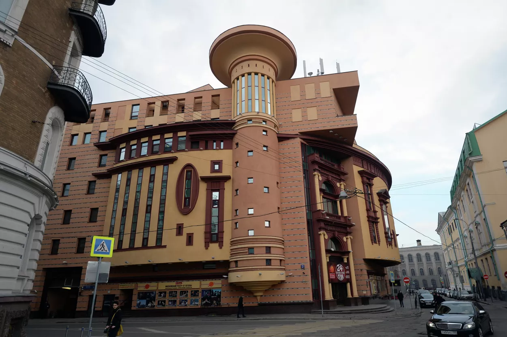

Дом Перцовой wiki
Годы постройки: 1907
Архитектор: Николай Жуков
Здание стоит на Пречистенской набережной. Построенный в начале ХХ века дом изначально был доходным. Фасады украшены сказочными персонажами, окна облицованы мозаикой из майолики: солнце, звезды, птица-Сирин, медведь, павлин, петух. Анималистическая тема дополняется растительной.
Проектировал дом архитектор Сергей Малютин — именно он придумал русскую матрешку. Поэтому неудивительно, что дом Перцовой будто списан с иллюстраций к книгам русских сказок.
Интерьеры тоже соответствуют общей концепции — все здесь продумано до самой мелкой детали. Некоторое время здание являлось «храмом Мельпомены» — здесь размещался театр «Летучая мышь», на сцене которого блистали такие звезды, как Константин Станиславский, Василий Качалов, Владимир Немирович-Данченко, Ольга Книппер-Чехова.
Богемная тема продолжилась открытием творческого салона, завсегдатаями которого были Вера Холодная и Александр Вертинский. Сейчас здание занимают государственные учреждения.
Особняк Арсения Морозова wiki
Годы постройки: 1895—1899 годы
Архитектор: Виктор Мазырин
Это здание в форме подковы на Воздвиженке наверняка видел каждый, не заметить его крайне трудно. Идея построить собственный дворец в центре столицы принадлежала Арсению Морозову, которому уж очень хотелось внести свое имя на страницы архитектурной истории Москвы.
Вернувшись из путешествий по Италии и Португалии и вдохновившись чудесами иностранного градостроительства, он поручил архитектору Виктору Мазырину спроектировать миниатюрный особняк в мавританском стиле.
Многие элементы декора авторства самого Морозова. В итоге архитектурный облик дома формировался под влиянием, казалось бы, несочетаемых стилей: здесь можно увидеть черты неомавританской, китайской, итальянской школ, модерна, классицизма, романтизма, ампира, португальского стиля «мануэлино».
Над самим домом красовался висячий сад. Интерьеры в оригинальности и экстравагантности не уступают экстерьерам: одни комнаты решены в стиле ампир и барокко, также чувствуются готическое и восточное влияния.
После революции в особняке размещался передвижной театр, потом здание стало «посольским» — здесь в разное время квартировали посольства Японии, Великобритании, Индии. В 2006 году особняк стал официальным домом приема Правительства РФ.
Театр Et Cetera wiki

Годы постройки: 2003-2005 годы
Архитекторы: Александр Великанов, Александр Кузьмин, Андрей Боков и Мария Бэлица
Уже в названии театра Александра Калягина Et Cetera и его внешнем виде можно найти ироничное противоречие: «тому подобного» в столице еще не построили. С первого взгляда это кажется настоящей геометрической головоломкой: на большом овале установлен прямоугольник с выступающими краями. Добавьте сюда еще башню колонну и окна разной высоты и формы.
Продуманная асимметричность и игра форм рождают волшебство, с любого ракурса здание выглядит совсем по-разному — так актер, меняя маски, поражает своей органичной многоликостью.
Дом-корабль wiki
Годы постройки: 1972-1986 годы
Архитекторы: Владимир Бабад и Всеволод Воскресенский
Этот необычный дом на Большой Тульской улице известен как Дом атомщиков. Иногда его также называют Кораблем или Лежачим небоскребом.
Грандиозное здание было построено в 1980-е годы прошлого века по проекту архитектора Владимира Бабада, который ранее занимался созданием атомных реакторов. Отсюда и название, а также интересные особенности: дом, например, имеет высокую сейсмическую устойчивость.
Длина дома — целых 400 м, ширина — 15 м, а высота — 50. Также в нем есть двухуровневые квартиры. Дом строился несколько лет, когда в одну часть здания вселялись первые жильцы, вторая еще строилась. Между парами подъездов и по краям внизу дома имеются высокие пролеты с большими колоннами.
Это архитектурное решение позволяет жильцам дома проходить сквозь него, а не обходить почти полкилометра вокруг.
Дом-яйцо wiki

Годы постройки: 2000—2002 годы
Архитекторы: Сергей Ткаченко, Сергей Ануфриев, Владимир Бельский, Светлана Белянина, Илья Вознесенский, Олег Дубровский, Алексей Кононенко, Михаил Лейкин, Галина Николашина, Вера Чулкова
Предыстория создания дома-яйца. В 1990-х годах архитектору Сергею Ткаченко доверили проектировку роддома в Вифлееме. Вдохновившись темой, он задумал создать в Москве здание, которое бы символизировало зарождение жизни. К реализации идеи приступили только в 2002 году, построив на улице Машкова здание в форме яйца.
Модернистский дом насчитывает четыре этажа. Волюты, декорирующие первый этаж, похожи на подставку для яйца Фаберже. Потолок мансарды, венчающей здание, изнутри расписан золотисто-голубыми красками в стиле Ренессанса.
Дом-парус wiki

Годы постройки: 2003—2007 годы
Архитекторы: Борис Уборевич-Боровский, Сергей Нарольский, Алексей Николашин, Татьяна Зайцева
Этот 24-этажный каменный парусник и по совместительству часть комплекса «Гранд-Парк» — победитель конкурса «Дом-2008 года». Проект разрабатывал Андрей Боков. На первых двух этажах размещены магазины и офисы, остальная территория отдана под квартиры, средняя площадь каждой — около 100 м.
Само здание по форме выполнено в форме капли и основание здания по сравнению с самой постройкой очень узкое. Этому есть объяснение — строение возвели на месте бывшей взлетно-посадочной полосы, и такое архитектурное решение было принято в угоду обстоятельствам.
Чайный дом wiki

Годы постройки: 1890—1893 годы
Архитекторы: Роман Клейн
Чайный дом часто называют элементом Древнего Китая в самом сердце столицы. В XIX веке в этом здании располагался чайный магазин Перлова.
Архитектурным проектом занимался Роман Клейн. Изначально трехэтажный особняк на Мясницкой не имел своих «китайских атрибутов», они появились позже, как следствие подготовки Москвы к визиту из Поднебесной миллиардера Ли Хунчжана, который должен был остановиться именно в доме Перлова. В итоге гостя разместили в другом доме, но здание изменилось до неузнаваемости.
Так, трудами оформителя Карла Гиппиуса на вполне типичном для Москвы тех лет доме появились восточные символы и орнаменты, причудливые статуи драконов и змей. Яркой доминантой строения стала башня-пагода — классика китайской архитектуры.
После революции Чайный дом некоторое время использовался в качестве жилого, затем его по каким-то причинам забросили. В 1990 году архитектурный памятник представлял собой жалкое зрелище.
Но в середине 1990-х годов городские власти занялись реставрацией этого важного архитектурного и исторического памятника, и все вернулось к истокам — сейчас здесь находится самый крупный в Москве чайный магазин и кондитерская.
Ажурный дом wiki

Годы постройки: 1939—1940 годы
Архитекторы: Андрей Буров и Борис Блохин
Шестиэтажный «Ажурный дом» на Ленинградском проспекте производит обманчивое впечатление: изысканность оформления фасада наводит на мысль об искусстве «для избранных» и элитарности тех, кто там проживает.
Но задумка изначально была совсем иной. Архитектор Андрей Буров, съездив в США, был очарован идеей постройки социального жилья для простых людей, сочетающего в себе эстетику и функциональность. Дом построили в 1940-х годах, не без вмешательства военных «реалий».
В доме один подъезд, три лестницы и два лифта. На каждом этаже по 18 квартир, лоджии скрыты эффектными ажурными решётками.
На первый взгляд кажется, что дом отделан мрамором, но это муар — бетон, смешанный с краской. Предполагалось, что дом войдет в серию, но этого так и не прозошло. Так здание и сохранило свою индивидуальность и приобрело охранный статус.
Дом Мельникова wiki
Годы постройки: 1927—1929 годы
Архитекторы: Константин Мельников
Дом-мастерская архитектора Константина Мельникова спрятался за современными московскими высотками в Кривоарбатском переулке. Дом был построен в 1929 году, чтобы апробировать круглые здания для массового жилья. Цилиндрическая конструкция и использование кирпичной «сетки» позволили использовать минимум материалов: 200 шестиугольных окон сэкономили кирпич и впустили много света в помещения.
После строительства дом стал одной из уникальных построек столицы и местом притяжения архитекторов, жителей города и туристов. Сам Константин Мельников прожил здесь до своей смерти в 1974 году. После смерти архитектора в доме до 2006 года жил его сын — художник Виктор Мельников. По последней информации, сейчас в доме проживает внучка архитектора.
Плоский дом на Таганке
Годы постройки: 1914 год
Архитекторы: В. М. Пиотрович
Плоским этот дом стал благодаря архитектурному решению и оптической иллюзии. На самом деле его ширина ничуть не отличается от обычных зданий, но благодаря скошенным углам создается впечатление, что это просто стена.
История плоского дома начинается в 1914 году, когда он был спроектирован архитектором В. М. Пиотровичем для купца Зуева. Уже тогда здание сильно выделялось на общем фоне. Соседние дома были построены намного раньше и имеют меньшее количество этаже. На таком контрасте сложно не заметить архитектурный шедевр.
Интересно, что такое решение Пиотрович принял не из-за желания создать что-то оригинальное, а из-за формы участка, на котором стоял дом. В XIX веке в Москве резко уплотнилась застройка. Каждый домовладелец хотел использовать свою землю с максимальной пользой, поэтому возводившиеся дома повторяли неправильную форму участков. В данном случае угловая форма участка возникла из-за соединения двух улиц.
Если вы никогда не видели это здание, не удивляйтесь. Долгое время оно было заброшенным, а с начала 2000-х скрывалось за строительной сеткой. На сегодняшний день реконструкция завершена, а в квартирах уже обустроились жильцы.
Dominion Tower wiki

Годы постройки: 2008-2015 года
Архитекторы: Заха Хадид
Одно из самых необычных зданий Москвы построили в 2015 году. Снаружи и внутри оно напоминает космический корабль. По проекту разные уровни этажей должны были выдаваться в стороны до 20 метров, однако такой замысел не вписывался в градостроительные нормы.
Проект заказали бюро всемирно известного архитектора Захи Хадид. Её авторский стиль узнаваем за счёт фокуса на футуристичных формах. Размещается здание в заводском районе Москвы, между типовыми советскими жилыми домами. Тем не менее увидеть его стоит — это единственная постройка по проекту Захи Хадид в Москве.